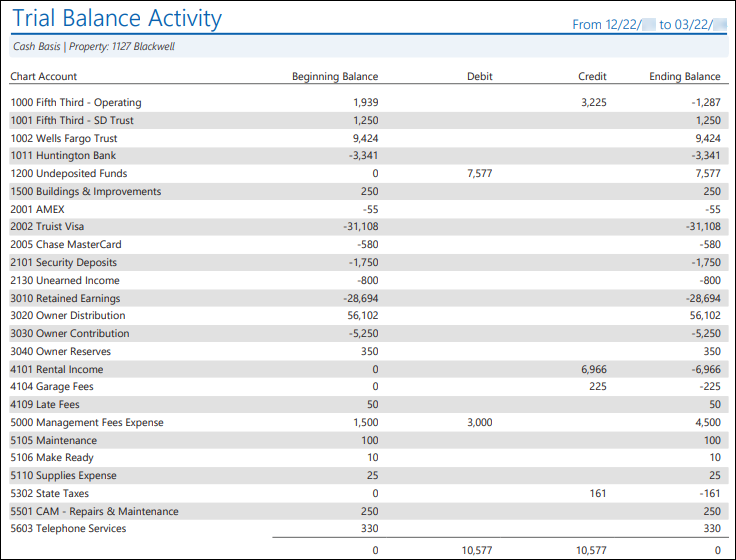
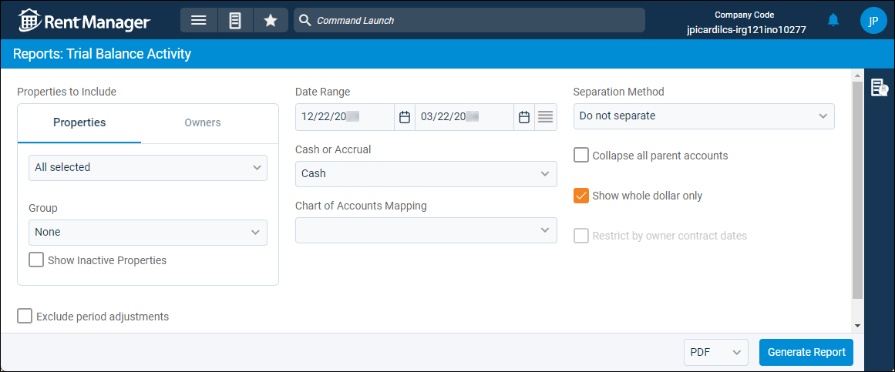

Source: https://rmxhelp.rentmanager.com/Topics/Express/Other/Reports/Trial-Balance-Activity.htm
Trial Balance Activity (Report)
The Trial Balance Activity report displays general ledger (GL) account activity for selected properties in terms of debits and credits across a selected date range. This report can be used to ensure that entries in Rent Manager are accurate compared to any real-world bookkeeping options you may have.
More Information
The GL start date is considered the financial start date, so any transactions or information dated before the GL start date are not included in the report results.
Related Privileges
| Group | Privilege | Column |
|---|---|---|
| Letter/Email Templates/Reports/Packets | Run reports | Enabled |
| Run accounting reports | Enabled |
Additionally, on the Reports tab, you must have access to Trial Balance Activity.
For more information, refer to Control User Access.
To view the Trial Balance Activity report, do the following:
-
Go to
 arrow_forward Financial Statements arrow_forward Balance Sheet arrow_forward Trial Balance Activity.
arrow_forward Financial Statements arrow_forward Balance Sheet arrow_forward Trial Balance Activity.
The Reports: Trial Balance Activity page displays. -
Adjust the report options as desired. Each option is described below.
-
Generate the report in your desired file format(s).
Related Preferences
Reports may look different depending on whether or not the Use modernized report style system preference is enabled. For more information, refer to General Report Options (System Preferences).

Report Options
The report options described below determine what data displays in the report.

Properties to Include
Select each property or a property Group to be included in the report.
More Information
This field populates only with the properties to which you have access. Your access to properties can be managed from your user account or on the property's details page. For more information, refer to Limit Access to a Property.
Optionally, check Show Inactive Properties to include properties that are no longer active.
Exclude Period Adjustments
Check to remove any journal entries marked as a Period Adjustment from the report results.
Date Range
Enter or select the date range to determine the data that displays in the report.
In the Date Range section, set the From and To dates for which the report should examine data.
These fields automatically populate with today’s date. Enter a different date or select a date from the calendar. Alternatively, adjust the dates using the available preset buttons or click  to open more options for setting a date range.
to open more options for setting a date range.
Cash or Accrual
This option determines whether the financial activity is calculated on a cash or accrual basis.
| Option | Description |
|---|---|
|
Accrual |
Includes all transactions for which income was earned and expenses were incurred, regardless of whether the payment was received or disbursed. |
|
Cash |
Includes only transactions for which payments are received or made. |
Chart of Accounts Mapping
To customize how general ledger accounts display in the report, select the name of the desired Chart Mapping. If no chart mappings are created, < None > displays. For more information, refer to Chart Accounts Mapping (Page).
Separation Method
This option becomes available when the Properties tab is selected.

Select one of the following options to determine how the report results are batched:
| Option | Description |
|---|---|
|
Do not separate |
All selected properties are combined into a single report. |
|
Separate by Properties |
Generates a separate report for each selected property. |
|
Separate by Units |
Generates a separate report for each unit associated with the selected properties. |
Collapse All Parent Accounts
Check to display only the total value of the parent account in the report. Otherwise, the value of the parent account and all subaccounts and their values.
Show Whole Dollar Only
If checked, general ledger account totals are rounded to the nearest whole dollar (0–49 cents is rounded down, and 50–99 cents is rounded up). Otherwise, the actual amount displays.
Restrict by Owner Contract Dates
This option becomes available when the Owner tab is selected.

Check to display only data that is within the active contract dates for each of the selected owners, regardless of the date range. This option is useful if, for example, your contract with one owner is ending and another contract with a different owner is beginning.
| Option | Description |
|---|---|
|
Checked |
The report filters to display only data within the selected owner or owners' active contract. For example, if the report is generated for 01/01/2026–12/31/2026, and Owner A has an active contract from January to June of 2026, the report displays only data at the properties owned by Owner A from January 2026 to June 2026. |
|
Unchecked |
The report displays current data for any months included in the report date range regardless of owner contracts. |
Report Results
The report results are described below including, if applicable, section, column, and subreport descriptions.
Report Header
The report header displays the report name and key information selected in the report options, such as date information, which properties were examined in the report, and whether the report was run in either a Cash or an Accrual basis.
Column Descriptions
The columns that display in the report are described below.
| Column | Description |
|---|---|
|
Chart Account |
The name and GL account number of each general ledger account that with a balance tied to any of the selected properties as of the report date. |
|
Beginning Balance |
The balance of the general ledger account as of one day prior to the start of the Date Range. More Information General ledger accounts that are increased by debits (expense and asset-type accounts) display as positive numbers, while general ledger accounts that are increased by credits (income, equity, and liability-type accounts) display as negative numbers. This is because the amount of credits always equals the amount of debits. Therefore, the total at the bottom of the column is always $0.00, because the amounts offset. |
|
Debit |
The balance of any general ledger account that has a debit balance at the end of the Date Range. The bottom of the column displays the total of all debit balances during the report period. This number matches the total credit balances. A debit balance is a positive balance for asset and expense-type general ledger accounts, but indicates a negative balance for liability, equity, and income-type general ledger accounts. |
|
Credit |
The balance of any general ledger account that has a credit balance at the end of the Date Range. The bottom of the column displays the total of all credit balances during the report period. This number matches the total debit balances. A credit balance is a positive balance for liability, equity, and income-type general ledger accounts, but indicates a negative balance for asset and expense-type general ledger accounts. |
|
Ending Balance |
The balance of each general ledger account as of the last day of the Date Range. The balance is calculated using the following formula: Ending Balance = Beginning Balance + Debit - Credit If general ledger account types that are increased by debits display as negative, or general ledger account types that are increased by credits display as positive, this is because the Ending Balance of the account was actually negative. |